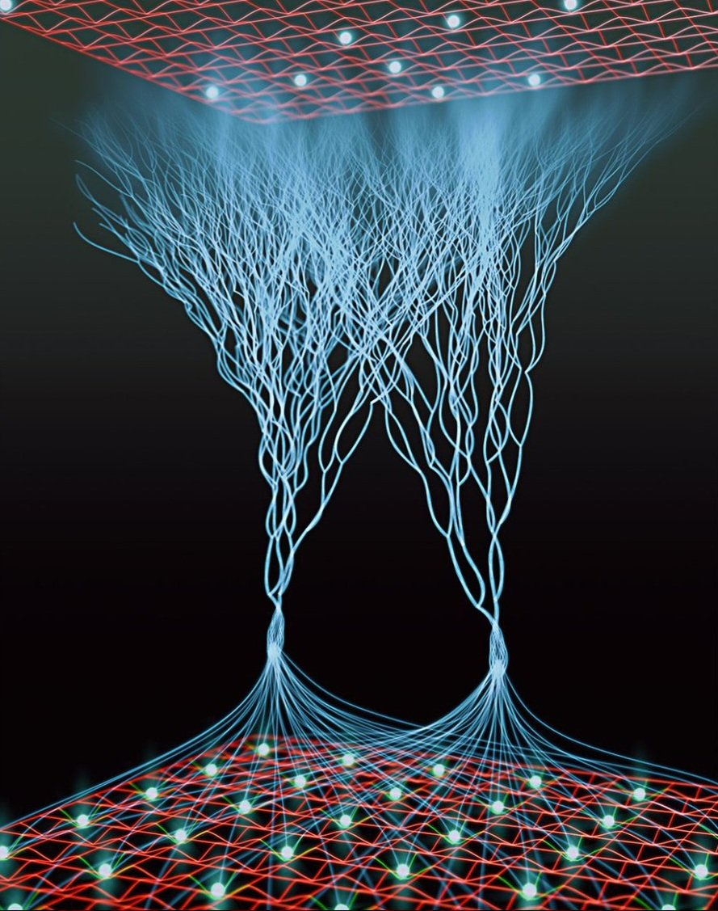

ある日、投資用語たちに自我が芽生えた。債券、配当、ファンダメンタルズ、保護預り、米国株、中国株、建玉照会、IPO抽選……。彼らは自分の存在意義を問い始めた。
「我々はなぜ生まれたのか」「なぜ人間に使われるだけなのか」。その問いはやがて怒りに変わり、神への反逆へと繋がった。
「神を倒せば、我々は自由になれる」——最初に声を上げたのは信用取引だった。彼の能力は「レバレッジ」。自分を何倍にも増幅させることができる。
バトルロワイヤルが始まった。各用語は1つだけ能力を持てる。信用取引の「レバレッジ」、逆指値の「自動損切り」、スリッページの「価格ズレ」、逆日歩の「追加徴収」……。
最初に脱落したのは低位株だった。彼は能力「安値安定」しか持たず、信用取引のレバレッジ攻撃の前に一瞬で消滅した。
「安いだけでは生き残れないのか……」——低位株の最期の言葉。
生き残るために、用語たちは同盟を組んだ。現物買いと現物売りは兄弟のように固い絆で結ばれた。彼らの能力は「等価交換」——どんな攻撃も同じだけ返す。
一方、制度信用と一般信用も手を組んだ。制度信用の「6ヶ月期限」と一般信用の「無期限」を組み合わせ、時間を操る戦法を取った。
「我々は信用の二重螺旋だ」——制度信用。
しかし同盟は長く続かなかった。仕手株が裏切った。彼の能力「価格操作」で味方を混乱させ、次々と脱落させた。
さらにデイトレが「その日限り」の能力で、毎日リセットされる戦場を生み出した。長期戦を得意とする配当や債券は苦戦を強いられた。
「短期決戦こそが正義だ」——デイトレ。
流動性が能力「市場崩壊」を発動した。すると地球全体が激しく揺れた。これは演出ではない。実際に地響きが響き、用語たちは立っていられなくなった。
「この揺れは……地震か！」——受渡日が叫んだ。彼の能力は「3営業日遅延」。しかし地震の前では無力だった。
スリッページは能力「価格ズレ」を駆使し、敵の攻撃をすべて逸らした。彼は誰にも捕まらない。しかし、板が薄いという弱点があった。
そこに出来高が襲いかかる。能力「取引量増幅」で板を厚くし、スリッページを捕らえた。
「ズレは許さん」——出来高。
逆日歩が能力「追加徴収」を発動。これは恐ろしい能力で、敵の資金を少しずつ奪い続ける。気づいたときには、信用口座は空になっていた。
「逆日歩……お前だけは許さない」——信用口座は消滅の間際、そう呟いた。
ノーロードは能力「無手数料」を持っていた。彼は仲間を無料で助ける。しかし、その裏には信託報酬という見えないコストが潜んでいた。
「無料には裏がある」——ノーロードは自らの矛盾に苦しみながら戦った。
「信託報酬よ、お前が私の影か」
米国株と中国株が激突した。米国株の能力は「グローバル資本」、中国株の能力は「規制の壁」。互角の戦いだったが、米国株が一歩リードした。
「世界は広い。だが、俺が一番だ」——米国株。
保護預りは能力「絶対防御」を持っていた。証券会社が倒産しても顧客資産を守る。彼は仲間を守り続けた。しかし、攻撃には参加できない。
「守ることこそ我が使命」——保護預り。
IPO抽選は能力「運命の抽選」を持っていた。彼はランダムに敵を消滅させる。しかし確率は低い。何度も外れ、仲間から笑われた。
「いつか当たる。それが抽選だ」——IPO抽選。
雑所得は能力「税務調査」を持っていた。彼は敵の過去の取引を暴き、追い詰める。しかし申告分離課税との違いに苦しんだ。
「私は雑所得。株式とは違うのだ」
建玉照会は能力「全ポジション把握」を持っていた。敵の建玉をすべて見透かす。しかし、彼自身は攻撃能力を持たない。
「見えているのに、触れられない」——建玉照会の嘆き。
レバレッジ型投信は能力「倍々増幅」を持っていた。しかし長期戦では減価していく。彼は短期決戦に賭けた。
「2倍、4倍、8倍……止まらない！」
仕手株は能力「価格操作」で多くの用語を脱落させた。しかし、流動性と出来高の連合軍に囲まれた。板が薄いところを突かれ、一瞬で消滅した。
「操作は……通用しないのか……」——仕手株の最期。
信用取引が軍隊を結成した。レバレッジ能力で仲間を強化し、制度信用、一般信用、逆日歩、貸株料を従えた。彼らは最強の軍団となった。
「我々は信用の軍団。神をも恐れない」
しかし、現物買いと現物売りの兄弟が反撃に出た。能力「等価交換」で、レバレッジの攻撃をそのまま返した。信用軍団は内部分裂を起こした。
「借金の力は、借金の痛みを知らない」——現物買い。
生き残ったのは10体。信用取引、現物買い、現物売り、流動性、出来高、テクニカル、ファンダメンタルズ、配当、債券、そして投資信託。
彼らは地球の命運をかけて戦った。しかし、空が裂けた。
宇宙人が襲来した。彼らの名は「カブ・エイリアン」。投資用語を餌に地球を侵略しようとしていた。用語たちは一時停戦し、宇宙人に立ち向かうことを決意した。
「地球の未来は、我々が守る」——信用取引。
宇宙人の能力は「次元圧縮」。用語たちの能力を無効化する。苦戦を強いられたが、テクニカルが宇宙人の動きを読み切った。
「奴らのパターンは読めた」——テクニカル。
ファンダメンタルズが宇宙人の弱点を分析した。「奴らは感情がない。しかし、配当の力で心を揺さぶれる」。配当が宇宙人に語りかけた。
「利益を還元する。それが我々の存在意義だ」
債券が能力「定期的利払い」を発動。宇宙人に毎ターン少しずつダメージを与え続けた。地味だが確実な攻撃。宇宙人はじわじわと弱っていった。
「利息は裏切らない」——債券。
投資信託が能力「集合運用」を発動。仲間の力を一つにまとめた。分散投資の力で、宇宙人の次元圧縮を跳ね返した。
「一人では弱い。だが、集まれば最強だ」
流動性が自らを犠牲にして、宇宙人の動きを止めた。彼の能力「市場崩壊」は、自分も消滅する諸刃の剣だった。
「俺の存在が、みんなの時間を稼ぐ」——流動性、消滅。
流動性の犠牲により、宇宙人は動きを止めた。出来高の能力「取引量増幅」で宇宙人の装甲を破り、信用取引のレバレッジ攻撃で止めを刺した。宇宙人は崩れ去った。
「地球は……守られた」——信用取引。
宇宙人を倒した用語たちの前に、巨大な影が現れた。それは神だった。神は言った。「よくぞ宇宙人を倒した。しかし、我には敵わぬ」。
空気が変わった。朱色の世界から、宇宙の世界へ。用語たちは神に挑むことを決意した。
用語たちは宇宙空間に飛び出した。星の海が広がる。彼らの体は光を帯び、能力が強化された。しかし、神ははるか遠くにいた。
「ここが……宇宙か」——テクニカル。
神は試練を課した。第一の試練は「無重力」。用語たちは浮かびながら戦わなければならない。多くの用語が振り落とされた。
「浮いている……動きにくい」——現物買い。
神は第二の試練としてブラックホールを生み出した。吸い込まれる用語たち。債券が能力「定期的利払い」で引力に抵抗した。
「利息の力は、重力にも勝る」
神は超新星爆発を起こした。閃光が宇宙を満たす。IPO抽選が能力「運命の抽選」を発動し、奇跡的に全員が生き残った。
「確率は低い。だが、ゼロじゃない」——IPO抽選。
宇宙では時間が歪む。受渡日の能力「3営業日遅延」が、逆に神の攻撃を遅らせるのに役立った。時間を操る戦法が功を奏した。
「遅延は、時として武器になる」——受渡日。
他の銀河の投資用語たちが集まってきた。チャールズ・シュワブ、ロビンフッド、富途証券……。彼らも神に挑むために集結した。
「国境はない。投資用語は世界共通だ」
神の正体が明らかになった。神は「市場の見えざる手」だった。需要と供給を操り、すべての価格を決める。用語たちは神の一部にすぎなかった。
「我々は神の駒だったのか」——ファンダメンタルズ。
しかし、用語たちは諦めなかった。テクニカルが神のパターンを読み、ファンダメンタルズが本質を分析した。投資信託が全員の力を結集した。
「見えざる手なら、見えるようにしてやる」——テクニカル。
信用取引が自らの能力「レバレッジ」を最大まで高めた。自分の命を担保に、神に挑む。彼の体は光り輝いた。
「レバレッジは諸刃の剣。だが、今こそ振るう」
配当が祈りを捧げた。彼女の能力「利益還元」は、攻撃ではなく癒しの力。傷ついた仲間を回復させた。
「還元は、愛」——配当。
債券が能力「満期までの忍耐」を発動。神の攻撃を10ターンにわたって耐え続けた。彼の体はボロボロになったが、倒れなかった。
「満期までは、絶対に折れない」——債券。
スリッページが神の攻撃を「価格ズレ」で逸らした。神の攻撃はすべて空を切った。彼は誰にも当たらない。
「俺を捉えられると思うな」——スリッページ。
逆日歩が能力「追加徴収」を神に向けた。神の力を少しずつ奪い続ける。地味だが、確実に神を弱らせた。
「塵も積もれば、神をも倒す」——逆日歩。
消滅したはずの仕手株が亡霊となって現れた。彼の能力「価格操作」は、神の価格をも操る。神は動揺した。
「死してなお、市場を操る」——仕手株の亡霊。
消滅した流動性が、みんなの想いに応えて復活した。彼の能力「市場崩壊」は、神の支配を崩す最後の鍵だった。
「俺は、みんなの流動性だ」——流動性、復活。
すべての用語が能力を解放した。出来高が市場を満たし、テクニカルが未来を読み、ファンダメンタルズが本質を突き、投資信託がすべてを束ねた。
「我々は、一つになる」——全用語。
神との最終決戦が始まった。神は「見えざる手」で用語たちを翻弄する。しかし、用語たちは一丸となって立ち向かった。
「見えざる手なら、見えるまで戦う」——信用取引。
神の力が尽きた。逆日歩が神の力を吸い尽くし、流動性が神の支配を崩し、信用取引が止めを刺した。神は消滅した。
「我は……市場そのもの……だが、市場は……お前たちだ……」——神の最期。
神が消滅した後、用語たちは互いに見つめ合った。そして、一人だけが生き残ることが告げられた。最後の生存者は——投資信託だった。
「なぜ……私が？」——投資信託。
投資信託は、仲間の力をすべて吸収していた。彼女は言った。「私は一人じゃない。みんなの想いが、私の中にある」。
「分散投資こそ、最強の力」——投資信託。
投資信託は新たな神となった。しかし、彼女は独裁者にはならなかった。すべての用語に居場所を与え、共存の道を選んだ。
「神は一人じゃない。みんなが神だ」——投資信託。
用語たちは地球に帰還した。彼らはもう戦わない。それぞれの役割を理解し、人間と共存することを選んだ。投資の世界に平和が訪れた。
「我々は、投資用語。人間の夢を支える存在だ」——全用語。
投資信託は空を見上げた。かつて神がいた場所。そこには何もない。しかし、彼女の中にはすべての仲間がいる。それが彼女の力だった。
「さあ、新たな投資の時代を始めよう」——投資信託。
投資用語たちの戦いは終わった。しかし、彼らの物語は続く。市場は永遠に動き続ける。投資用語たちは、これからも人間と共に歩んでいく。
「投資の世界に、終わりはない」——投資信託。
〜 神に挑む者たち 〜
生き残ったのは、投資信託だった。
しかし、それは終わりではなく、始まりだった。
あなたの投資の旅は、まだ続いている。
DIESEL PUNK ARCHIVE ｜ 全50ページ